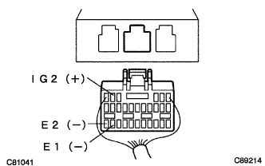

SRS airbag system power supply voltage decrease |
| Dtcno. | DTC detection item |
|---|---|
| none | Power supply voltage decrease |
| Step 1 | Inspection preparation |
Separate the battery's minihana stormy and wait for 90 seconds.
Separate the connector from the horn button ASSY.(The point isreference)
Instrument panel passenger airbags separate the connector from ASSY.(The point isreference)
Separate the connector from the front seat outa belt Assy LH and RH (Priten Shoner).(The point is
reference)
Cut the connector from the airbag sensor ASSY CTR.(The point isreference)
Separate the connector from the front airbag sensor RH and LH.(The point is
reference)
| Step 2 | Power supply voltage inspection |
Connect the battery minor stormy and turn on the IG switch.
|  |
Use SST (Toyota Electrical Tester) to check the voltage between the IG2-E1 (E2) terminal of the connector of the airbag sensor ASSY CTR.
|
| ||||
| OK | |
| Step 3 | Airbag Warnin Grand Point Inspection |
Set the IG switch to OFF (Lock).
Separate the battery's minihana stormy and wait for 90 seconds.
Connect the connector to the horn button Assembly.
Connect the connector to the instrument panel passenger airbag Assy.
Connect the connector to the front seat outa belt Assy RH and LH (Priten Shoner).
Connect the connector to the airbag sensor Assembly CTR.
Connect a connector to the front airbag sensor RH and LH.
Connect the battery's minihana stormy, turn on the IG switch and wait for 60 seconds.
Activate the electric system (defocator, wiper, headlights, heater blower, etc.) and check the airbag warnin glander.
|
| ||||
| OK | |
| Step 4 | Airbag sensor ASSY inspection |
Use the SST to delete the diag code, and then check the diag code again.
For code reading with Warnin Grand Lamp
For code reading by Tascan
|
| ||||
| OK | ||
| ||